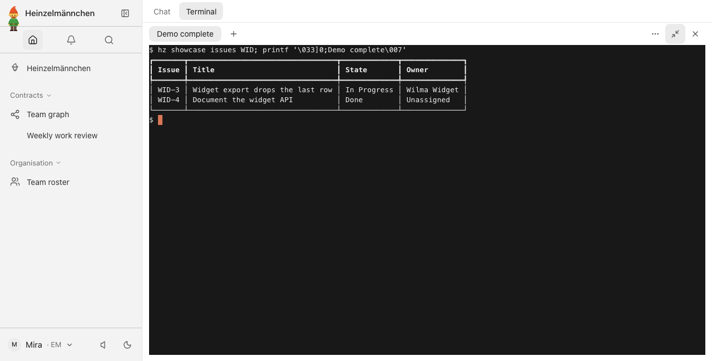
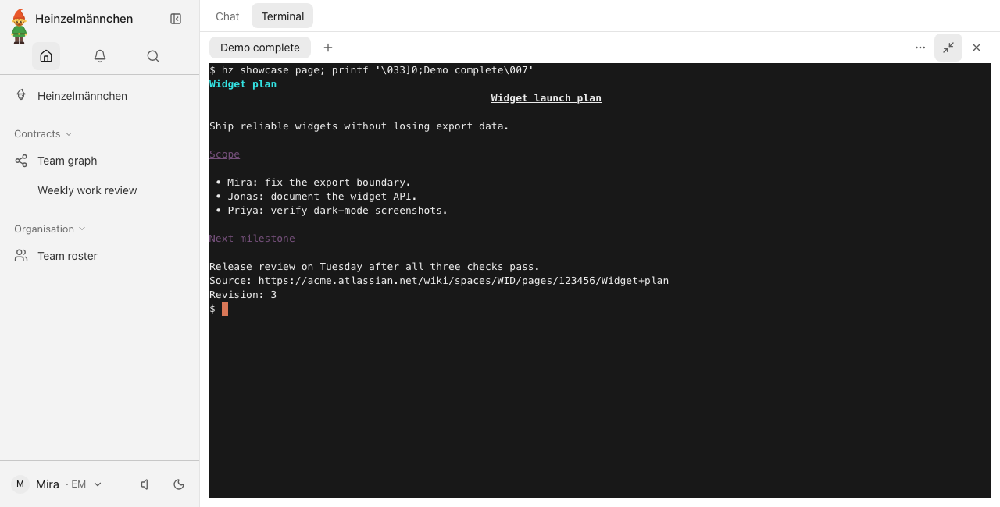
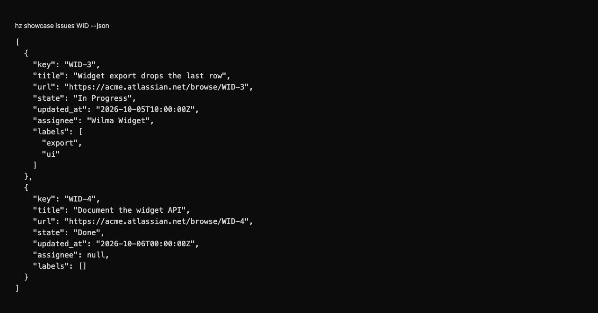
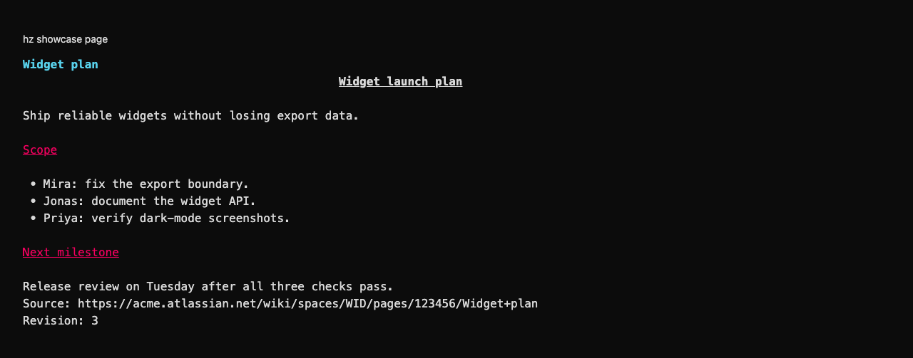
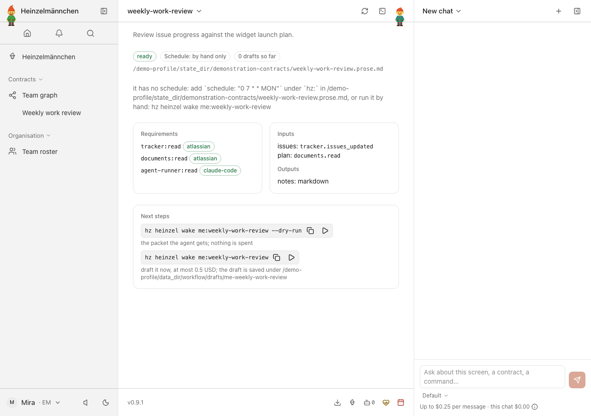

heinzel-atlassian
Isolated demonstration profile · Core 0.9.1 · Review these captures before committing. Click an image to inspect it at full size.

UI · Demo data: fictional Jira changes, owners and states in the app terminal, using the real adapter and a fixture-only requester.
UI · Demo data: read the fictional Widget launch plan with its source and revision, using the real adapter and a fixture-only requester.
CLI · Demo data: structured fictional Jira changes through the real adapter, using a fixture-only requester and local vendor replies.
CLI · Demo data: the fictional Confluence plan, source and revision in the shell, using a fixture-only requester and local vendor replies.
UI · Weekly work review combines the declared source inputs — local demonstration, no report generated